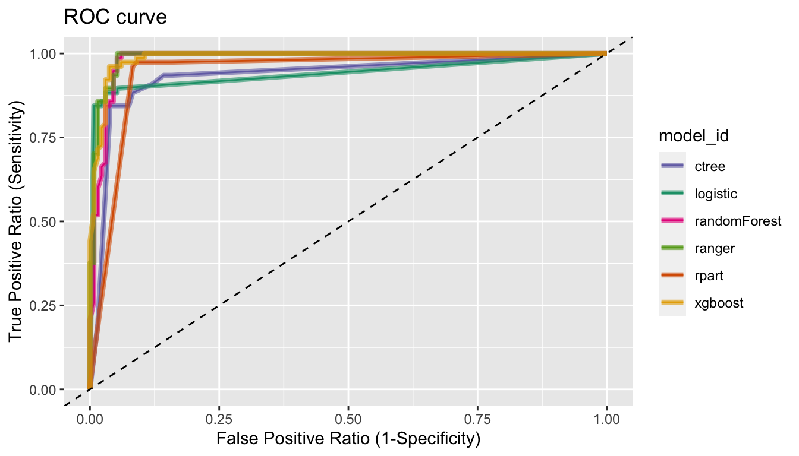
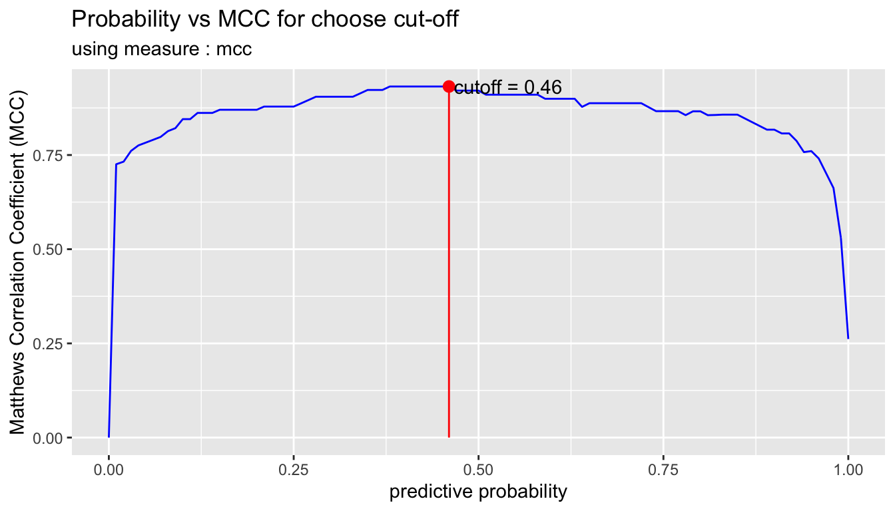

Preface
Once the data set is ready for model development, the model is fitted, predicted and evaluated in the following ways:
- Cleansing the dataset
- Split the data into a train set and a test set
-
Modeling and Evaluate, Predict
-
Modeling
- Binary classification modeling
-
Evaluate the model
- Predict test set using fitted model
- Calculate the performance metric
- Plot the ROC curve
-
Tunning the cut-off
-
Predict
- Predict
- Predict with cut-off
-
Modeling
The alookr package makes these steps fast and easy:
Data: Wisconsin Breast Cancer Data
BreastCancer of mlbench package is a breast cancer data. The objective is to identify each of a number of benign or malignant classes.
A data frame with 699 observations on 11 variables, one being a character variable, 9 being ordered or nominal, and 1 target class.:
-
Id: character. Sample code number -
Cl.thickness: ordered factor. Clump Thickness -
Cell.size: ordered factor. Uniformity of Cell Size -
Cell.shape: ordered factor. Uniformity of Cell Shape -
Marg.adhesion: ordered factor. Marginal Adhesion -
Epith.c.size: ordered factor. Single Epithelial Cell Size -
Bare.nuclei: factor. Bare Nuclei -
Bl.cromatin: factor. Bland Chromatin -
Normal.nucleoli: factor. Normal Nucleoli -
Mitoses: factor. Mitoses -
Class: factor. Class. level isbenignandmalignant.
library(mlbench)
data(BreastCancer)
# class of each variables
sapply(BreastCancer, function(x) class(x)[1])
Id Cl.thickness Cell.size Cell.shape Marg.adhesion
"character" "ordered" "ordered" "ordered" "ordered"
Epith.c.size Bare.nuclei Bl.cromatin Normal.nucleoli Mitoses
"ordered" "factor" "factor" "factor" "factor"
Class
"factor" Preperation the data
Perform data preprocessing as follows.:
- Find and imputate variables that contain missing values.
- Split the data into a train set and a test set.
- To solve the imbalanced class, perform sampling in the train set of raw data.
- Cleansing the dataset for classification modeling.
Fix the missing value with dlookr::imputate_na()
find the variables that include missing value. and imputate the missing value using imputate_na() in dlookr package.
library(dlookr)
library(dplyr)
# variable that have a missing value
diagnose(BreastCancer) %>%
filter(missing_count > 0)
# A tibble: 1 x 6
variables types missing_count missing_percent unique_count unique_rate
<chr> <chr> <int> <dbl> <int> <dbl>
1 Bare.nuclei factor 16 2.29 11 0.0157
# imputation of missing value
breastCancer <- BreastCancer %>%
mutate(Bare.nuclei = imputate_na(BreastCancer, Bare.nuclei, Class,
method = "mice", no_attrs = TRUE, print_flag = FALSE))Split data set
Splits the dataset into a train set and a test set with split_by()
split_by() in the alookr package splits the dataset into a train set and a test set.
The ratio argument of the split_by() function specifies the ratio of the train set.
split_by() creates a class object named split_df.
library(alookr) # split the data into a train set and a test set by default arguments sb <- breastCancer %>% split_by(target = Class) # show the class name class(sb) [1] "split_df" "grouped_df" "tbl_df" "tbl" "data.frame" # split the data into a train set and a test set by ratio = 0.6 tmp <- breastCancer %>% split_by(Class, ratio = 0.6)
The summary() function displays the following useful information about the split_df object:
- random seed : The random seed is the random seed used internally to separate the data
- split data : Information of splited data
- train set count : number of train set
- test set count : number of test set
- target variable : Target variable name
- minority class : name and ratio(In parentheses) of minority class
- majority class : name and ratio(In parentheses) of majority class
# summary() display the some information
summary(sb)
** Split train/test set information **
+ random seed : 35081
+ split data
- train set count : 489
- test set count : 210
+ target variable : Class
- minority class : malignant (0.344778)
- majority class : benign (0.655222)
# summary() display the some information
summary(tmp)
** Split train/test set information **
+ random seed : 80767
+ split data
- train set count : 419
- test set count : 280
+ target variable : Class
- minority class : malignant (0.344778)
- majority class : benign (0.655222)Check missing levels in the train set
In the case of categorical variables, when a train set and a test set are separated, a specific level may be missing from the train set.
In this case, there is no problem when fitting the model, but an error occurs when predicting with the model you created. Therefore, preprocessing is performed to avoid missing data preprocessing.
In the following example, fortunately, there is no categorical variable that contains the missing levels in the train set.
# list of categorical variables in the train set that contain missing levels nolevel_in_train <- sb %>% compare_target_category() %>% filter(is.na(train)) %>% select(variable) %>% unique() %>% pull nolevel_in_train character(0) # if any of the categorical variables in the train set contain a missing level, # split them again. while (length(nolevel_in_train) > 0) { sb <- breastCancer %>% split_by(Class) nolevel_in_train <- sb %>% compare_target_category() %>% filter(is.na(train)) %>% select(variable) %>% unique() %>% pull }
Handling the imbalanced classes data with sampling_target()
Issue of imbalanced classes data
Imbalanced classes(levels) data means that the number of one level of the frequency of the target variable is relatively small. In general, the proportion of positive classes is relatively small. For example, in the model of predicting spam, the class of interest spam is less than non-spam.
Imbalanced classes data is a common problem in machine learning classification.
table() and prop.table() are traditionally useful functions for diagnosing imbalanced classes data. However, alookr’s summary() is simpler and provides more information.
# train set frequency table - imbalanced classes data
table(sb$Class)
benign malignant
458 241
# train set relative frequency table - imbalanced classes data
prop.table(table(sb$Class))
benign malignant
0.6552217 0.3447783
# using summary function - imbalanced classes data
summary(sb)
** Split train/test set information **
+ random seed : 35081
+ split data
- train set count : 489
- test set count : 210
+ target variable : Class
- minority class : malignant (0.344778)
- majority class : benign (0.655222)Handling the imbalanced classes data
Most machine learning algorithms work best when the number of samples in each class are about equal. And most algorithms are designed to maximize accuracy and reduce error. So, we requre handling an imbalanced class problem.
sampling_target() performs sampling to solve an imbalanced classes data problem.
Resampling - oversample minority class
Oversampling can be defined as adding more copies of the minority class.
Oversampling is performed by specifying “ubOver” in the method argument of the sampling_target() function.
# to balanced by over sampling
train_over <- sb %>%
sampling_target(method = "ubOver")
# frequency table
table(train_over$Class)
benign malignant
322 322 Resampling - undersample majority class
Undersampling can be defined as removing some observations of the majority class.
Undersampling is performed by specifying “ubUnder” in the method argument of the sampling_target() function.
# to balanced by under sampling
train_under <- sb %>%
sampling_target(method = "ubUnder")
# frequency table
table(train_under$Class)
benign malignant
167 167 Generate synthetic samples - SMOTE
SMOTE(Synthetic Minority Oversampling Technique) uses a nearest neighbors algorithm to generate new and synthetic data.
SMOTE is performed by specifying “ubSMOTE” in the method argument of the sampling_target() function.
# to balanced by SMOTE
train_smote <- sb %>%
sampling_target(seed = 1234L, method = "ubSMOTE")
# frequency table
table(train_smote$Class)
benign malignant
668 501
Cleansing the dataset for classification modeling with cleanse()
The cleanse() cleanse the dataset for classification modeling.
This function is useful when fit the classification model. This function does the following.:
- Remove the variable with only one value.
- And remove variables that have a unique number of values relative to the number of observations for a character or categorical variable.
- In this case, it is a variable that corresponds to an identifier or an identifier.
- And converts the character to factor.
In this example, The cleanse() function removed a variable ID with a high unique rate.
# clean the training set train <- train_smote %>% cleanse ── Checking unique value ─────────────────────────── unique value is one ── No variables that unique value is one. ── Checking unique rate ─────────────────────────────── high unique rate ── remove variables with high unique rate ● Id = 429(0.366980325064157) ── Checking character variables ─────────────────────── categorical data ── No character variables.
Extract test set for evaluation of the model with extract_set()
# extract test set test <- sb %>% extract_set(set = "test")
Binary classification modeling with run_models()
run_models() performs some representative binary classification modeling using split_df object created by split_by().
run_models() executes the process in parallel when fitting the model. However, it is not supported in MS-Windows operating system and RStudio environment.
Currently supported algorithms are as follows.:
- logistic : logistic regression using
statspackage - rpart : Recursive Partitioning Trees using
rpartpackage - ctree : Conditional Inference Trees using
partypackage - randomForest :Classification with Random Forest using
randomForestpackage - ranger : A Fast Implementation of Random Forests using
rangerpackage
run_models() returns a model_df class object.
The model_df class object contains the following variables.:
- step : character. The current stage in the classification modeling process.
- For objects created with
run_models(), the value of the variable is “1.Fitted”.
- For objects created with
- model_id : model identifiers
- target : name of target variable
- positive : positive class in target variable
- fitted_model : list. Fitted model object by model_id’s algorithms
result <- train %>% run_models(target = "Class", positive = "malignant") result # A tibble: 5 x 5 step model_id target positive fitted_model <chr> <chr> <chr> <chr> <list> 1 1.Fitted logistic Class malignant <glm> 2 1.Fitted rpart Class malignant <rpart> 3 1.Fitted ctree Class malignant <BinaryTr> 4 1.Fitted randomForest Class malignant <rndmFrs.> 5 1.Fitted ranger Class malignant <ranger>
Evaluate the model
Evaluate the predictive performance of fitted models.
Predict test set using fitted model with run_predict()
run_predict() predict the test set using model_df class fitted by run_models().
run_predict () is executed in parallel when predicting by model. However, it is not supported in MS-Windows operating system and RStudio environment.
The model_df class object contains the following variables.:
- step : character. The current stage in the classification modeling process.
- For objects created with
run_predict(), the value of the variable is “2.Predicted”.
- For objects created with
- model_id : character. Type of fit model.
- target : character. Name of target variable.
- positive : character. Level of positive class of binary classification.
- fitted_model : list. Fitted model object by model_id’s algorithms.
- predicted : result of predcit by each models
pred <- result %>% run_predict(test) pred # A tibble: 5 x 6 step model_id target positive fitted_model predicted <chr> <chr> <chr> <chr> <list> <list> 1 2.Predicted logistic Class malignant <glm> <fct [210]> 2 2.Predicted rpart Class malignant <rpart> <fct [210]> 3 2.Predicted ctree Class malignant <BinaryTr> <fct [210]> 4 2.Predicted randomForest Class malignant <rndmFrs.> <fct [210]> 5 2.Predicted ranger Class malignant <ranger> <fct [210]>
Calculate the performance metric with run_performance()
run_performance() calculate the performance metric of model_df class predicted by run_predict().
run_performance () is performed in parallel when calculating the performance evaluation metrics However, it is not supported in MS-Windows operating system and RStudio environment.
The model_df class object contains the following variables.:
- step : character. The current stage in the classification modeling process.
- For objects created with
run_performance(), the value of the variable is “3.Performanced”.
- For objects created with
- model_id : character. Type of fit model.
- target : character. Name of target variable.
- positive : character. Level of positive class of binary classification.
- fitted_model : list. Fitted model object by model_id’s algorithms
- predicted : list. Predicted value by individual model. Each value has a predict_class class object.
- performance : list. Calculate metrics by individual model. Each value has a numeric vector.
# Calculate performace metrics. perf <- run_performance(pred) perf # A tibble: 5 x 7 step model_id target positive fitted_model predicted performance <chr> <chr> <chr> <chr> <list> <list> <list> 1 3.Performanc… logistic Class maligna… <glm> <fct [210… <dbl [15]> 2 3.Performanc… rpart Class maligna… <rpart> <fct [210… <dbl [15]> 3 3.Performanc… ctree Class maligna… <BinaryTr> <fct [210… <dbl [15]> 4 3.Performanc… randomForest Class maligna… <rndmFrs.> <fct [210… <dbl [15]> 5 3.Performanc… ranger Class maligna… <ranger> <fct [210… <dbl [15]>
The performance variable contains a list object, which contains 15 performance metrics:
- ZeroOneLoss : Normalized Zero-One Loss(Classification Error Loss).
- Accuracy : Accuracy.
- Precision : Precision.
- Recall : Recall.
- Sensitivity : Sensitivity.
- Specificity : Specificity.
- F1_Score : F1 Score.
- Fbeta_Score : F-Beta Score.
- LogLoss : Log loss / Cross-Entropy Loss.
- AUC : Area Under the Receiver Operating Characteristic Curve (ROC AUC).
- Gini : Gini Coefficient.
- PRAUC : Area Under the Precision-Recall Curve (PR AUC).
- LiftAUC : Area Under the Lift Chart.
- GainAUC : Area Under the Gain Chart.
- KS_Stat : Kolmogorov-Smirnov Statistic.
# Performance by analytics models
performance <- perf$performance
names(performance) <- perf$model_id
performance
$logistic
ZeroOneLoss Accuracy Precision Recall Sensitivity Specificity
0.06666667 0.93333333 0.87500000 0.94594595 0.94594595 0.92647059
F1_Score Fbeta_Score LogLoss AUC Gini PRAUC
0.90909091 0.90909091 2.19527344 0.93735095 0.91335453 0.06757556
LiftAUC GainAUC KS_Stat
1.10300021 0.78323681 87.24165342
$rpart
ZeroOneLoss Accuracy Precision Recall Sensitivity Specificity
0.06190476 0.93809524 0.89610390 0.93243243 0.93243243 0.94117647
F1_Score Fbeta_Score LogLoss AUC Gini PRAUC
0.91390728 0.91390728 0.40855502 0.95041733 0.92468203 0.85580575
LiftAUC GainAUC KS_Stat
1.96205032 0.79169884 88.09618442
$ctree
ZeroOneLoss Accuracy Precision Recall Sensitivity Specificity
0.07142857 0.92857143 0.87341772 0.93243243 0.93243243 0.92647059
F1_Score Fbeta_Score LogLoss AUC Gini PRAUC
0.90196078 0.90196078 1.08795685 0.95886328 0.93143879 0.26912750
LiftAUC GainAUC KS_Stat
1.36406291 0.79716860 86.50635930
$randomForest
ZeroOneLoss Accuracy Precision Recall Sensitivity Specificity
0.03333333 0.96666667 0.92405063 0.98648649 0.98648649 0.95588235
F1_Score Fbeta_Score LogLoss AUC Gini PRAUC
0.95424837 0.95424837 0.30386385 0.97948132 0.95886328 0.68471239
LiftAUC GainAUC KS_Stat
1.74479086 0.81052124 94.23688394
$ranger
ZeroOneLoss Accuracy Precision Recall Sensitivity Specificity
0.03333333 0.96666667 0.92405063 0.98648649 0.98648649 0.95588235
F1_Score Fbeta_Score LogLoss AUC Gini PRAUC
0.95424837 0.95424837 0.17125546 0.98032591 0.96065183 0.79882872
LiftAUC GainAUC KS_Stat
1.86115581 0.81106821 94.23688394 If you change the list object to tidy format, you’ll see the following at a glance:
# Convert to matrix for compare performace.
sapply(performance, "c")
logistic rpart ctree randomForest ranger
ZeroOneLoss 0.06666667 0.06190476 0.07142857 0.03333333 0.03333333
Accuracy 0.93333333 0.93809524 0.92857143 0.96666667 0.96666667
Precision 0.87500000 0.89610390 0.87341772 0.92405063 0.92405063
Recall 0.94594595 0.93243243 0.93243243 0.98648649 0.98648649
Sensitivity 0.94594595 0.93243243 0.93243243 0.98648649 0.98648649
Specificity 0.92647059 0.94117647 0.92647059 0.95588235 0.95588235
F1_Score 0.90909091 0.91390728 0.90196078 0.95424837 0.95424837
Fbeta_Score 0.90909091 0.91390728 0.90196078 0.95424837 0.95424837
LogLoss 2.19527344 0.40855502 1.08795685 0.30386385 0.17125546
AUC 0.93735095 0.95041733 0.95886328 0.97948132 0.98032591
Gini 0.91335453 0.92468203 0.93143879 0.95886328 0.96065183
PRAUC 0.06757556 0.85580575 0.26912750 0.68471239 0.79882872
LiftAUC 1.10300021 1.96205032 1.36406291 1.74479086 1.86115581
GainAUC 0.78323681 0.79169884 0.79716860 0.81052124 0.81106821
KS_Stat 87.24165342 88.09618442 86.50635930 94.23688394 94.23688394compare_performance() return a list object(results of compared model performance). and list has the following components:
- recommend_model : character. The name of the model that is recommended as the best among the various models.
- top_count : numeric. The number of best performing performance metrics by model.
- mean_rank : numeric. Average of ranking individual performance metrics by model.
- top_metric : list. The name of the performance metric with the best performance on individual performance metrics by model.
In this example, compare_performance() recommend the “ranger” model.
# Compaire the Performance metrics of each model
comp_perf <- compare_performance(pred)
comp_perf
$recommend_model
[1] "ranger"
$top_metric_count
logistic rpart ctree randomForest ranger
0 2 0 7 11
$mean_rank
logistic rpart ctree randomForest ranger
4.423077 3.038462 4.230769 1.884615 1.423077
$top_metric
$top_metric$logistic
NULL
$top_metric$rpart
[1] "PRAUC" "LiftAUC"
$top_metric$ctree
NULL
$top_metric$randomForest
[1] "ZeroOneLoss" "Accuracy" "Precision" "Recall" "Specificity"
[6] "F1_Score" "KS_Stat"
$top_metric$ranger
[1] "ZeroOneLoss" "Accuracy" "Precision" "Recall" "Specificity"
[6] "F1_Score" "LogLoss" "AUC" "Gini" "GainAUC"
[11] "KS_Stat"
Plot the ROC curve with plot_performance()
compare_performance() plot ROC curve.
# Plot ROC curve plot_performance(pred)

Tunning the cut-off
In general, if the prediction probability is greater than 0.5 in the binary classification model, it is predicted as positive class. In other words, 0.5 is used for the cut-off value. This applies to most model algorithms. However, in some cases, the performance can be tuned by changing the cut-off value.
plot_cutoff () visualizes a plot to select the cut-off value, and returns the cut-off value.
pred_best <- pred %>% filter(model_id == comp_perf$recommend_model) %>% select(predicted) %>% pull %>% .[[1]] %>% attr("pred_prob") cutoff <- plot_cutoff(pred_best, test$Class, "malignant", type = "mcc")

cutoff [1] 0.54 cutoff2 <- plot_cutoff(pred_best, test$Class, "malignant", type = "density")

cutoff2 [1] 0.4912 cutoff3 <- plot_cutoff(pred_best, test$Class, "malignant", type = "prob")
cutoff3 [1] 0.54
Performance comparison between prediction and tuned cut-off with performance_metric()
Compare the performance of the original prediction with that of the tuned cut-off. Compare the cut-off with the non-cut model for the model with the best performance comp_perf$recommend_model.
comp_perf$recommend_model
[1] "ranger"
# extract predicted probability
idx <- which(pred$model_id == comp_perf$recommend_model)
pred_prob <- attr(pred$predicted[[idx]], "pred_prob")
# or, extract predicted probability using dplyr
pred_prob <- pred %>%
filter(model_id == comp_perf$recommend_model) %>%
select(predicted) %>%
pull %>%
"[["(1) %>%
attr("pred_prob")
# predicted probability
pred_prob
[1] 0.0000000000 0.3523087302 0.0000000000 0.8266777778 0.9209126984
[6] 0.0000000000 0.0000000000 0.0000000000 0.9977714286 0.8785380952
[11] 0.9951714286 0.8423404762 0.9791722222 0.9981666667 0.0000000000
[16] 1.0000000000 0.9883230159 0.6459238095 0.9901174603 0.7077912698
[21] 0.0052698413 0.0193023810 0.0017500000 0.0855380952 0.0000000000
[26] 0.0000000000 0.0000000000 0.9948015873 0.9992500000 0.9814523810
[31] 0.9500793651 0.2357253968 0.0126682540 0.9996666667 0.0146619048
[36] 0.0015714286 0.9479603175 0.0000000000 0.9667563492 0.0000000000
[41] 0.0000000000 0.0000000000 0.0000000000 0.0000000000 0.8492301587
[46] 0.0087666667 0.0002222222 0.9401214286 0.0000000000 0.9643333333
[51] 0.6163468254 0.9860253968 0.0230150794 0.0000000000 0.0000000000
[56] 0.0000000000 0.9817738095 0.0000000000 0.9997142857 0.9977714286
[61] 0.0071944444 0.0000000000 0.0155857143 1.0000000000 0.0000000000
[66] 0.8196000000 0.9526031746 1.0000000000 1.0000000000 0.1354095238
[71] 0.0000000000 0.0002000000 0.9600753968 0.9791722222 0.8160912698
[76] 0.9199531746 0.0000000000 0.0000000000 0.8617825397 0.9991428571
[81] 1.0000000000 0.9904785714 0.8447761905 0.9159658730 0.3674063492
[86] 0.0000000000 0.0000000000 0.9934428571 0.1500055556 0.9480119048
[91] 0.0000000000 0.9997142857 0.9003349206 0.0000000000 0.9752222222
[96] 0.9643468254 0.9523730159 0.0000000000 0.9954166667 0.9526587302
[101] 0.0000000000 0.0000000000 0.9899746032 0.0676650794 0.5406888889
[106] 0.0000000000 0.8543166667 0.9997142857 1.0000000000 0.0000000000
[111] 1.0000000000 0.0000000000 0.0000000000 0.0000000000 0.0000000000
[116] 0.0562142857 0.0000000000 0.9730142857 0.0000000000 0.0142444444
[121] 0.0000000000 0.0000000000 0.0009444444 0.0123238095 0.9919642857
[126] 0.0000000000 0.0000000000 0.4807031746 0.0568380952 0.0752896825
[131] 0.1568619048 0.0000000000 0.0179857143 0.0024777778 0.9664444444
[136] 0.9943587302 0.1100126984 0.0000000000 0.9995000000 0.0132952381
[141] 1.0000000000 0.0002000000 0.0000000000 1.0000000000 0.0000000000
[146] 0.0000000000 0.0000000000 0.0000000000 0.0000000000 0.0776928571
[151] 1.0000000000 0.9836912698 0.0002000000 0.0000000000 0.0000000000
[156] 0.0000000000 0.0000000000 0.0000000000 0.0000000000 0.9322095238
[161] 0.0000000000 0.0000000000 0.8565531746 0.0000000000 0.0077015873
[166] 0.0000000000 0.0000000000 0.0028571429 0.9179595238 0.0550960317
[171] 0.3057730159 0.2470174603 0.0000000000 0.0000000000 0.8251952381
[176] 0.9985428571 0.0000000000 0.0426865079 0.0000000000 0.8885174603
[181] 0.9991428571 0.0023793651 0.0000000000 0.0000000000 0.0000000000
[186] 0.0132571429 0.0065071429 1.0000000000 0.1875611111 0.0000000000
[191] 0.0000000000 0.0000000000 0.0000000000 0.9986000000 0.0221468254
[196] 0.0028492063 0.0000000000 0.0000000000 0.9991428571 0.0000000000
[201] 0.0000000000 0.0000000000 0.0000000000 0.0000000000 0.0000000000
[206] 0.0000000000 0.0329801587 0.9863119048 0.0092666667 0.9861277778
# compaire Accuracy
performance_metric(pred_prob, test$Class, "malignant", "Accuracy")
[1] 0.9666667
performance_metric(pred_prob, test$Class, "malignant", "Accuracy",
cutoff = cutoff)
[1] 0.9666667
# compaire Confusion Matrix
performance_metric(pred_prob, test$Class, "malignant", "ConfusionMatrix")
actual
predict benign malignant
benign 130 1
malignant 6 73
performance_metric(pred_prob, test$Class, "malignant", "ConfusionMatrix",
cutoff = cutoff)
actual
predict benign malignant
benign 130 1
malignant 6 73
# compaire F1 Score
performance_metric(pred_prob, test$Class, "malignant", "F1_Score")
[1] 0.9542484
performance_metric(pred_prob, test$Class, "malignant", "F1_Score",
cutoff = cutoff)
[1] 0.9542484
performance_metric(pred_prob, test$Class, "malignant", "F1_Score",
cutoff = cutoff2)
[1] 0.9542484If the performance of the tuned cut-off is good, use it as a cut-off to predict positives.
Predict
If you have selected a good model from several models, then perform the prediction with that model.
Create data set for predict
Create sample data for predicting by extracting 100 samples from the data set used in the previous under sampling example.
data_pred <- train_under %>% cleanse ── Checking unique value ─────────────────────────── unique value is one ── No variables that unique value is one. ── Checking unique rate ─────────────────────────────── high unique rate ── remove variables with high unique rate ● Id = 326(0.976047904191617) ── Checking character variables ─────────────────────── categorical data ── No character variables. set.seed(1234L) data_pred <- data_pred %>% nrow %>% seq %>% sample(size = 50) %>% data_pred[., ]
Predict with alookr and dplyr
Do a predict using the dplyr package. The last factor() function eliminates unnecessary information.
pred_actual <- pred %>% filter(model_id == comp_perf$recommend_model) %>% run_predict(data_pred) %>% select(predicted) %>% pull %>% "[["(1) %>% factor() pred_actual [1] malignant benign benign benign benign malignant malignant [8] malignant benign malignant benign benign benign malignant [15] malignant benign malignant benign malignant malignant malignant [22] malignant benign malignant benign benign malignant benign [29] benign malignant benign malignant malignant malignant malignant [36] malignant benign benign benign benign malignant malignant [43] benign benign benign malignant malignant malignant malignant [50] benign Levels: benign malignant
If you want to predict by cut-off, specify the cutoff argument in the run_predict() function as follows.:
In the example, there is no difference between the results of using cut-off and not.
pred_actual2 <- pred %>% filter(model_id == comp_perf$recommend_model) %>% run_predict(data_pred, cutoff) %>% select(predicted) %>% pull %>% "[["(1) %>% factor() pred_actual2 [1] malignant benign benign benign benign malignant malignant [8] malignant benign malignant benign benign benign malignant [15] malignant benign malignant benign malignant malignant malignant [22] malignant benign malignant benign benign malignant benign [29] benign malignant benign malignant malignant malignant malignant [36] malignant benign benign benign benign malignant malignant [43] benign benign benign malignant malignant malignant malignant [50] benign Levels: benign malignant sum(pred_actual != pred_actual2) [1] 0